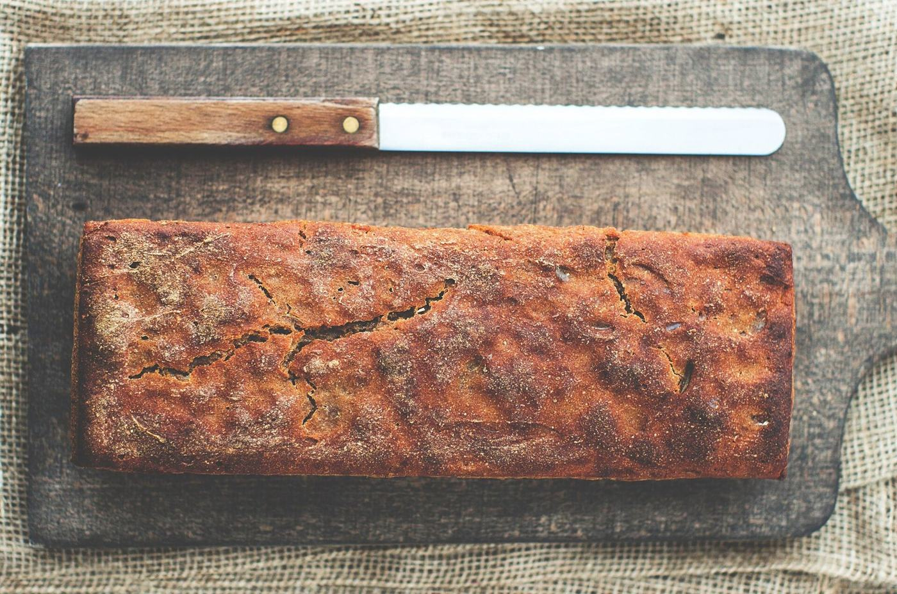

店のこと
六つの部位の配置図
お店の詳しい情報は準備中です。ここでは、制作側が考えたデザインの見かたをご紹介します。
制作側の連想
番号は、部位の番号
ホームの図にある1〜6の番号は、それぞれ部位の名前に対応します。制作側の連想で、お店の理念・由来とは無関係です。実際の機器の仕様を示すものでもありません。
1
ディスプレイ
曲名や再生の進み具合を映す、本体の上側にある小さな画面。
2
操作ホイール
円を指でなぞって、項目を送ったり音量を変えたりする輪の部分。
3
センターボタン
操作ホイールの真ん中にある、決定や再生・停止に使う丸いボタン。
4
イヤホンジャック
本体の上端にある、イヤホンのプラグを差し込む小さな穴。
5
ホールドスイッチ
押し間違いを防ぐために、操作をロックするスライド式のスイッチ。
6
接続端子
本体の下端にある、充電やデータのやり取りに使う差し込み口。
ギャラリー(イメージ)
焼き上がりのパンの写真


写真はパンのイメージです。お店のものではありません。
